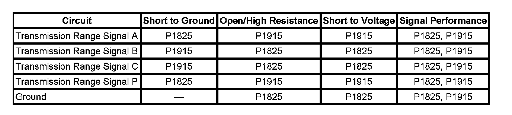
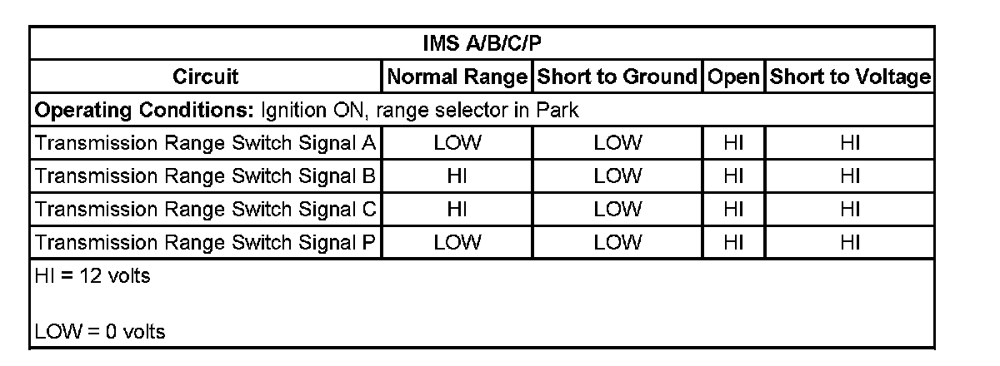
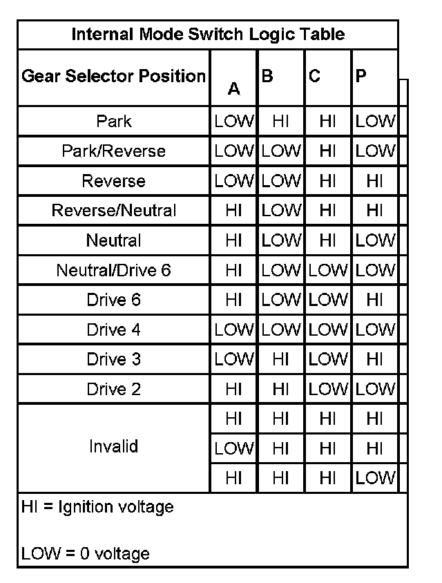

P1915
DTC P1825 or P1915
DTC Descriptors
DTC P1825
Internal Mode Switch - Invalid Range
DTC P1915
Internal Mode Switch Start/Wrong Range
Diagnostic Fault Information
Perform the Diagnostic System Check - Vehicle prior to using this diagnostic procedure. Initial Inspection and Diagnostic Overview

Typical Scan Tool Data

Circuit/System Description
The internal mode switch (IMS) assembly is a sliding contact switch attached to the control valve body within the transmission. The 4 inputs to the transmission control module (TCM) from the switch indicate which position is selected by the transmission manual shaft. The input voltage at the TCM is high when the switch is open and low when the switch is closed to ground. The state of each input is displayed on the scan tool as IMS. The IMS input parameters represented are transmission range signal A, Signal B, signal C, and signal P.
Conditions for Running the DTC
No OSS DTCs P0722 or P0723.
DTC P1825
Vehicle speed sensor (VSS) is greater than 16 km/h (10 mph)
DTC P1915
The transmission output shaft speed is less than 90 RPM.
Conditions for Setting the DTC
DTC P1825
Any one or more of the following conditions:
^ The IMS signal circuit A, B, or P are Low in Park for greater than 1 second.
^ The IMS signal circuit A is Low in D6 for 8 seconds.
^ The IMS signal circuit C is High in D6 for 8 seconds.
^ The TCM detects an invalid range from the IMS for 3.25 seconds.
^ The IMS signal circuit C is high in D6 for greater than 8 seconds and the engine torque is greater than 20 N.m (15 lb ft).
^ Park/Neutral Switch equals P/N and the IMS state is not Park or Neutral, or the Park/Neutral switch is not Park or Neutral and the IMS state equals Park or Neutral for 4 seconds.
DTC P1915
The manual shift shaft switch assembly indicates a transitional state during the following sequence:
^ The engine speed is less than 50 RPM for more than 0.25 seconds.
^ The engine speed is 50-480 RPM for more than 0.07 seconds.
^ The engine speed is greater than 525 RPM for more than 3.25 seconds.
^ The transmission input shaft speed is greater than 250 RPM.
Action Taken When the DTC Sets
^ DTCs P1825 and P1915 are Type A DTCs.
^ The TCM commands maximum line pressure.
^ The TCM turns OFF all solenoids.
^ The TCM freezes transmission adaptive functions.
^ The TCM defaults the transmission to third gear if the current gear is 1st, 2nd, or 3rd; or fifth gear if the current gear is 4th, 5th, or 6th gear.
Conditions for Clearing the DTC
DTCs P1825 and P1915 are Type A DTCs.
Diagnostic Aids
^ The IMS is part of a wire harness, which connects electrically to the control solenoid (w/body and TCM) valve assembly and is serviced separately from the control solenoid (w/body and TCM) valve assembly. Inspect the IMS, harness, connector, and control solenoid (w/body and TCM) valve assembly pins for metallic debris. Use the J 35616 GM-approved terminal test kit for any test that requires probing the control solenoid (w/body and TCM) valve assembly harness connector or a component harness connector.
^ Inspect for a incorrectly adjusted range selector lever cable. Refer to Range Selector Lever Cable Adjustment.
^ Inspect the manual shaft detent assembly for proper alignment with the manual shaft detent lever. The manual shaft detent roller must be centered over the detent lever and not contact the IMS actuator arm.
Reference Information
Schematic Reference
Automatic Transmission Controls Schematics
Connector End View Reference
^ Automatic Transmission Inline 16-Way Connector End View
^ Automatic Transmission Internal Connector End Views
^ Automatic Transmission Related Connector End Views
DTC Type Reference
^ Diagnostic Trouble Code (DTC) Type Definitions
^ Diagnostic Trouble Code (DTC) List/Type
Electrical Information Reference
^ Circuit Testing
^ Connector Repairs
^ Testing for Intermittent Conditions and Poor Connections
^ Wiring Repairs
Scan Tool Reference
^ Scan Tool Output Controls
^ Scan Tool Data List
^ Scan Tool Data Definitions
Special Tools Required
J 35616 GM-Approved Terminal Test Kit
Circuit/System Verification
Test for the correct operation of the IMS. Refer to Transmission Internal Mode Switch Logic.
If the IMS operation matches the IMS logic table, the system is functioning normally.
Circuit/System Testing
1. Disconnect the IMS connector at the control solenoid (w/body and TCM) valve assembly. Ignition ON. The scan tool IMS A/B/C/P parameter should display HI for all four signal circuits.
^ If a signal circuit displays LOW, the control solenoid (w/body and TCM) valve assembly is faulty.
2. Connect a 3-amp fused jumper wire between each transmission range signal circuit at the control solenoid (w/body and TCM) valve assembly and ground ensuring that the signal circuit displays LOW when connected to ground.
^ If a signal circuit remains HI when connected to ground, the control solenoid (w/body and TCM) valve assembly is faulty.
^ If the above two tests indicate correct TCM functions, the IMS is faulty.
Component Testing

Repair Instructions
Perform the Diagnostic Repair Verification after completing the diagnostic procedure. Verification Tests
Important: Perform the Control Solenoid Valve and Transmission Control Module Assembly Inspection for the following components before replacing the components. Control Solenoid Valve and Transmission Control Module Assembly Inspection
^ Internal Mode Switch (IMS) Replacement. Refer to Manual Shift Shaft Position Switch Replacement.
^ Control Solenoid (w/Body and TCM) Valve Assembly Replacement. Refer to Control Module References for replacement, setup, and programming. Programming and Relearning
^ Perform the Service Fast Learn Adapts. Programming and Relearning